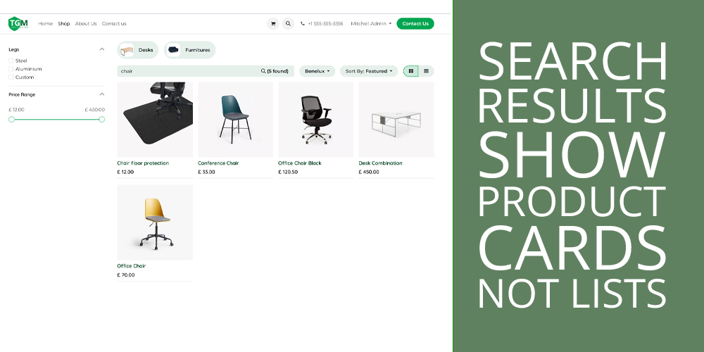
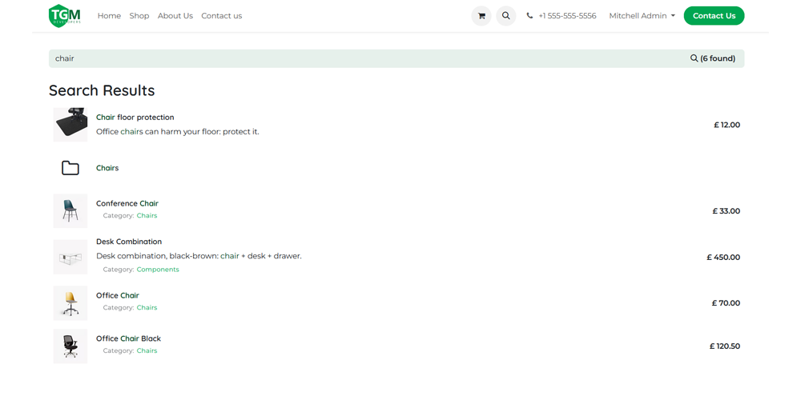
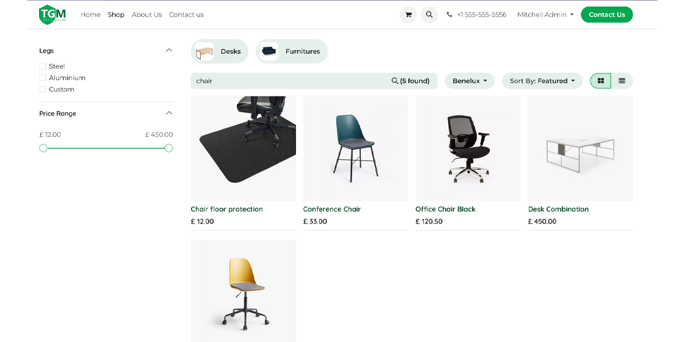

Replace the plain-text search results with your shop’s product grid. Install and done.
Without this module

Default search results: a plain text list with no images, no prices, and no Add to Cart.
With this module

Search redirects to the shop: product cards with images, prices, and Add to Cart.
Odoo’s default website search shows results as a plain text list — no product images, no prices, no Add to Cart button. For an eCommerce store, that’s a dead end. Customers who search are your highest-intent visitors, and showing them a wall of text instead of your products is leaving money on the table.
This module fixes it with a single redirect. Search results land on your shop page where customers see the same rich product grid they’re used to — complete with images, prices, filtering, sorting, and direct Add to Cart.
Install it and it works. No settings, no toggles, no per-page setup. The redirect activates immediately.
Search results show as the same product grid your customers see when browsing the shop — images, prices, and all.
Customers get access to filters, sorting, and Add to Cart directly from search results.
No database changes, no new fields, no models. Just a small controller and a JS file. Clean install, clean uninstall.
Works with all standard Odoo themes. No template overrides, so no conflicts with your existing design.
Search terms are preserved in the URL, so you can track what customers are searching for in your analytics.
website_sale (standard)The module redirects all website search bar queries to the shop page. If you rely on the default search results to find blog posts or other non-product content, those will no longer appear in search results. This module is designed for stores where product search is the primary use case.
No. It doesn’t override any templates. The redirect happens at the controller level before any template renders, so your theme is unaffected.
Nothing. Install the module and it works immediately. Uninstall it and the default search behaviour returns.
The autocomplete dropdown is handled separately by Odoo’s built-in JS. This module intercepts the form submission that happens when a user presses Enter or clicks the search button. The autocomplete still works as normal.
Yes. It works alongside all other TGM eCommerce modules including the Pricing Table, Price Range, and Minimum Quantity modules.
Install the module. That’s it. No configuration needed.
Developed by The Great Merch Co.
Support: hello@thegreatmerch.com • thegreatmerch.com
© 2025 The Great Merch Co. Licensed under LGPL-3.